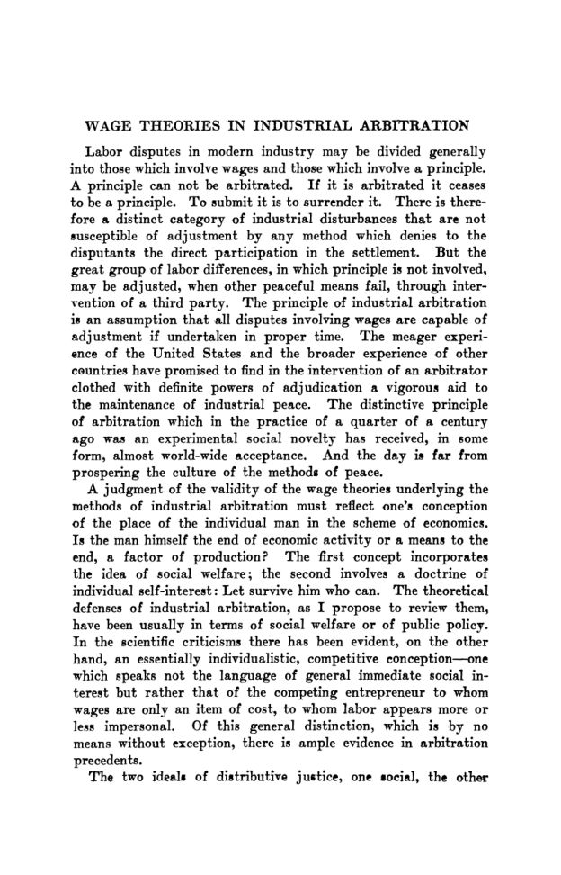

Compton, 1916: o árbitro de salários e a falta de um critério
Leitura: 8 min
Wilson Compton revê meio século de arbitragem salarial na Grã-Bretanha, nos Estados Unidos e na Australásia e conclui que os árbitros aplicaram uma teoria social de redistribuição, não uma teoria econômica.


Em 1879, no caso dos mineiros de carvão de South Yorkshire, o juiz Ellison resumiu a situação do árbitro de salários. O advogado dos patrões puxaria os salários para baixo, o dos mineiros para cima, e a ele caberia decidir. Mas não havia, disse, princípio de direito nem de economia política envolvido: o patrão não é obrigado a empregar por um preço que não compensa, e o homem não é obrigado a trabalhar por um salário que não sustenta a família.
“Mas com que princípio devo decidir, não faço a menor ideia.” (“But on what principle I have to deal with it I have not the slightest idea.”)
Wilson Compton, do Dartmouth College, usa o episódio para abrir uma revisão das teorias de salário implícitas na arbitragem industrial. Seu objetivo é julgar a validade dessas teorias como parte de uma teoria unificada da distribuição, examinando os precedentes nos países onde a arbitragem foi praticada.
O que a arbitragem decide que a conciliação não decide?
Compton separa as disputas trabalhistas em duas classes. As que envolvem um princípio não admitem a intervenção de um terceiro, porque submeter um princípio é renunciar a ele. As que envolvem salários podem ser resolvidas, quando outros meios falham, por um árbitro. Mediação e conciliação, diz, são apenas formas mais refinadas de negociação coletiva: o poder de decidir continua com as partes. Na arbitragem em sentido estrito, a decisão é de um terceiro e obriga os dois lados; arbitragem com sentença voluntária, para ele, é um capricho, porque uma sentença insatisfatória para uma parte não obriga nenhuma.
A diferença fundamental, portanto, é entre barganhar e adjudicar. A conciliação não traz consigo nenhuma teoria de salário. A arbitragem traz, porque abole os métodos costumeiros de fixar salários e exige do árbitro uma decisão que precisa se justificar por algum critério de justiça distributiva.
Que teorias de salário os árbitros usaram?
Muitas, e de modo indiscriminado. Em 1875, no caso dos mineiros de Northumberland, os patrões pediram corte de 20% nos salários, alegando a queda dos preços do carvão desde 1871, ano de lucros que diziam normais. Os mineiros responderam que a regra os faria arcar com todas as consequências de um mercado adverso. O árbitro descartou os princípios das duas partes e decidiu pelo fundo de salários.
Nos vinte anos seguintes, a ênfase passou à escala móvel, que fazia os salários acompanharem os preços; sua lentidão irritava os trabalhadores na alta e os patrões na baixa. Depois veio o salário vital, defendido pelos sindicatos como primeiro encargo de toda indústria. Na arbitragem de 1910, sob a lei Erdman, entre a Baltimore and Ohio e os sindicatos de condutores e de ferroviários, que resultou na sentença Clark-Morrissey, os sindicatos pediram os salários do Oeste em nome da padronização, do custo de vida, do risco, da produtividade e dos lucros das ferrovias. Compton vê ali cinco teorias ao mesmo tempo. Na sentença de 1913, para as ferrovias do Leste, os árbitros disseram considerar básico o aumento do custo de vida.
O que o árbitro não consegue saber?
Quase tudo o que precisaria. Não pode isolar a parte do valor do produto imputável ao trabalho, nem a imputável ao capital. O socialista lhe diz que o trabalho produz tudo; o economista, que o trabalhador produz o que recebe; nenhum dos dois ajuda. Recorrendo à justiça distributiva, o árbitro precisa decidir se a indústria pode pagar, o que são salários e lucros justos, sobre que base calcular o lucro, se o fundo de comércio merece remuneração, se convém manter no mercado os produtores menos eficientes e se o aumento poderá ser repassado aos preços, o que depende da elasticidade da demanda e dos substitutos.
Não espanta, diz Compton, que a Anthracite Coal Commission, de 1902, tenha se recusado a ouvir testemunhos sobre a capacidade de pagamento das empresas. Sua tarefa era restaurar a paz, e o acordo, prorrogado em 1912 por mais quatro anos, era uma solução de conveniência. Na prática, em quase todos os países, o árbitro abandonou a busca de uma decisão teoricamente defensável, e a fórmula mais usada passou a ser dividir a diferença: fazendo justiça substancial às duas partes, não faz justiça estrita a nenhuma.
Como funcionou na Australásia?
A Australásia era o laboratório. Em 1908, no caso dos mineiros de Barrier, o juiz Higgins, presidente do tribunal de arbitragem da Commonwealth, definiu o salário vital como o necessário para satisfazer as necessidades normais do empregado médio, visto como ser humano numa comunidade civilizada, e sustentou que o empregador pobre deveria pagar o mesmo que o rico. Em Adelaide, o juiz Gordon disse que a indústria que não pudesse pagar ao menos 7 xelins por dia de oito horas deveria fechar. Em Nova Gales do Sul, onde a arbitragem compulsória foi adotada em 1901, um juiz do tribunal de arbitragem advertiu que tirar a greve dos sindicatos fortes criaria dificuldades graves.
Compton resume os resultados da experiência. O sistema salarial tornou-se rígido, passando do contrato ao status, o inverso do ideal de progresso de Sir Henry Maine. Os empresários marginais resistiram aos aumentos. Os fabricantes concordavam que os custos de produção subiram, embora todo o período fosse de alta geral de preços. E o mínimo fixado tendeu a virar o salário padrão; os empregadores se queixavam de ter de baixar o salário dos mais eficientes para compensar o dos menos eficientes.
O raciocínio, aponta Compton, fecha um círculo. O salário vital é relativo à posição econômica do trabalhador; essa posição depende do salário que ele vinha recebendo; e esse salário depende do valor que o empresário atribui ao seu trabalho. Mesmo a lei de arbitragem compulsória permitia pagar menos que o mínimo a idosos e incapazes, porque não valeriam o mínimo para o empregador: a teoria do valor voltava pela porta dos fundos.
Qual é, afinal, a teoria da arbitragem?
Compton recorre às palavras de S. N. D. North, de 1896: se salários devem seguir preços, ou preços salários, é algo que os tribunais de arbitragem não podem determinar, e nenhuma resolução muda a regra.
“o salário vital só é possível em condições que permitam o preço vital” (“the living wage is only possible under conditions which allow the living price”)
A conclusão de Compton é que os princípios da arbitragem se tornaram uma teoria social de redistribuição, não uma teoria econômica da distribuição. Como método de paz industrial, a arbitragem é intermediária, não final; corretiva, não remediadora; oportunista, não ideal. Do ponto de vista estritamente econômico, a doutrina salarial da arbitragem carece de justificação teórica tanto quanto o salário mínimo legal que dela costuma resultar. Mas ele fecha lembrando, com W. P. Reeves, que a tarefa do árbitro não é agradar aos professores de economia ortodoxa, e sim encontrar um modo razoável de convivência para duas partes que não conseguem encontrá-lo sozinhas.
Na minha leitura
Na minha leitura, o artigo isola com precisão o problema de informação do árbitro. Ele precisaria conhecer a produtividade do trabalho, a elasticidade da demanda e a capacidade de repasse de cada empresa, e não conhece nenhuma delas. Sem esse conhecimento, as regras práticas, como dividir a diferença ou garantir um salário vital, substituem a teoria. O que Compton chama de raciocínio circular é a dificuldade de fixar um piso sem uma referência externa ao próprio salário.
A observação de que o mínimo tende a virar salário padrão é empírica e importante. Ela antecipa a discussão sobre a compressão da estrutura salarial e o efeito do piso sobre a remuneração dos mais qualificados, que até hoje acompanha qualquer avaliação de política de salário mínimo.
Glossário
- Arbitragem compulsória
- solução de uma disputa trabalhista por decisão de um terceiro, obrigatória para as partes.
- Conciliação
- intervenção de um terceiro para aproximar as partes, que mantêm o poder de decidir.
- Fundo de salários
- doutrina segundo a qual o salário médio é dado pela divisão de um fundo fixo pelo número de trabalhadores.
- Escala móvel
- regra que ajusta os salários automaticamente aos preços do produto.
- Salário vital
- salário suficiente para as necessidades normais de um trabalhador e de sua família, fixado como piso.
- Lei Erdman
- lei federal americana sobre mediação e arbitragem em disputas ferroviárias.
- Empresário marginal
- o produtor de custo mais alto que ainda permanece no mercado.
- Do contrato ao status
- fórmula de Henry Maine, que via o progresso como passagem de relações fixadas por posição social para relações fixadas por contrato; Compton aponta o movimento inverso.
Fontes
- Wage Theories in Industrial Arbitration — Wilson Compton, Dartmouth College (pp. 324–342). JSTOR · Internet Archive (PDF)
- Edição completa, com os demais artigos: Nº 141 do Arquivo.
Documento em domínio público (EUA, publicado antes de 1931), via JSTOR Early Journal Content e Internet Archive. Resumo e comentário do autor deste site, sem afiliação com a American Economic Association. Encontrou um erro? Escreva: a correção é publicada no próprio texto, com data.
← Adams, 1916: a isenção pela capitalização é uma falácia fiscal ↑ Nº 141 · A falácia do imposto capitalizado e o salário decidido por um árbitro